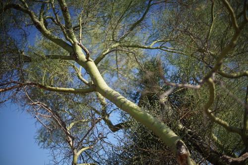
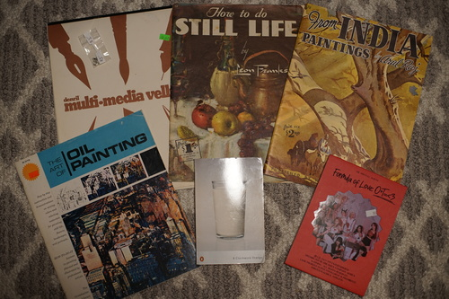

I went back to Arizona with Ryan's family last weekend. Ryan saw a lizard and a tarantula, but I only got to see a bunny. Where da animals at???
It was cactus fruit season! After confirming that there were no poisonous cactus fruits, I went out with Ryan's uncle and we picked a couple. One of us got more spikes in our hand than the other.
Cactus fruit is great!! I haven't had it in a few years, but it's delicious after you spend 5 minutes carefully ripping the spines out.
Sounds like it was the stormy season because we saw lightning pretty much every day. Also saw the strange singular raincloud dumping buckets of water in only one area.
Ryan and I ended up in the guest house at the airbnb. It was a really cute little studio with a mini kitchen and washer/dryer. I don't think my doll collection and Ryan's video game collection will fit in it though so we can't move in.
I was half asleep when I had the experience of feeling something hit my arm and hearing it bounce on to the bed. I thought I was just imagining it, but a few minutes later BUZZZZZ in my hair. Never sleep below the ceiling vent!!!!
On the last night, Ryan played NSYNC videos for me on the TV!!!! Kyaaa~~~ I love NSYNC!!! XD

And some shopping completely unrelated to Arizona
For Volta
She counted it as magazine price although it was marked $2.
Also mistakenly charged me for magazines instead of paperbacks for these.
I buy all my kpop at the thrift store.
It's Ryan's fault. He handed her to me.
once again, I ran the numbers and I didn't want to not own a Depeche Mode more than I didn't want to pay $3 for a single
I spent a lot of time fighting with myself over how I hate David Guetta and how much I would regret leaving it.
I hate it when the CDs I want are donated to the expensive Goodwills in this area. Pls donate to St. Vinnie's next time. New Order's Republic and Erasure's The Innocents were also there. I already have them, so you can go buy them. I recommend both!